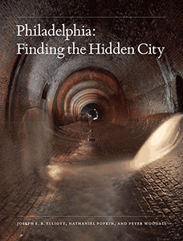

<HTML><head><script> (function(i,s,o,g,r,a,m){i['GoogleAnalyticsObject']=r;i[r]=i[r]||function(){  (i[r].q=i[r].q||[]).push(arguments)},i[r].l=1*new Date();a=s.createElement(o),  m=s.getElementsByTagName(o)[0];a.async=1;a.src=g;m.parentNode.insertBefore(a,m)   })(window,document,'script','//www.google-analytics.com/analytics.js','ga');   ga('create', 'UA-43183130-1', 'temple.edu');   ga('send', 'pageview'); </script><title>Joseph E. B. Elliott, Nathaniel Popkin, and Peter Woodall: Philadelphia - Print</TITLE><link rel="stylesheet" href="../general.css" type="text/css"><SCRIPT LANGUAGE = JAVASCRIPT></SCRIPT></HEAD><BODY LINK="#3152A5" VLINK="#3152A5" ALINK=Gray BGCOLOR=White><CENTER><P CLASS=intro><br>

Revealing the physical and cultural intricacies of Philadelphia, from the intimate to the monumental<br><br></P></CENTER><br>&nbsp;<!--none//--><Table width="100%" border=0 cellspacing=5><tr><td width="175" align="center"></td>
<td>
<h1 class = "booktitle">Philadelphia</h1> 
<h1 class = "subtitle">Finding the Hidden City</h1>
<h3 class="author">Joseph E. B. Elliott, Nathaniel Popkin, and Peter Woodall </h3>
<p class="info"><p class="info">cloth EAN:  978-1-4399-1300-0 (ISBN:1-4399-1300-5)</br>$40.00, Nov 17, <font color=#990033>Available</font><br>
<p class="info"><p class="info">192 pp, 7.875 x 10.5, 102 color photos, 8 halftones</p></td></tr></table></P></td></tr></table><BR>


<BLOCKQUOTE>
<p><i>"With stunning photographs and vivid prose, </i>Philadelphia: Finding the Hidden City <i> takes us on a fascinating journey through the submerged urban realm and provides an essential Baedeker to Philadelphia's past by offering entr&#233;e to its hidden places of privilege, production, and prayer</i>."<br/>&#8212;<b>Michael Z. Wise</b>, author of <i> Capital Dilemma: Germany's Search for a New Architecture of Democracy</i><br>
</BLOCKQUOTE>
<P>
<p>Philadelphia possesses an exceptionally large number of places that have almost disappeared-from workshops and factories to sporting clubs and societies, synagogues, churches, theaters, and railroad lines. In <i>Philadelphia: Finding the Hidden City,</i> urban observers Nathaniel Popkin and Peter Woodall uncover the contemporary essence of one of America's oldest cities. Working with accomplished architectural photographer Joseph Elliott, they explore secret places in familiar locations, such as the Metropolitan Opera House on North Broad Street, the Divine Lorraine Hotel, Reading Railroad, Disston Saw Works in Tacony, and mysterious parts of City Hall.<br/>
<br/>Much of the real Philadelphia is concealed behind facades. <i>Philadelphia </i>artfully reveals its urban secrets. Rather than a nostalgic elegy to loss and urban decline, <i> Philadelphia </i>exposes the city's vivid layers and living ruins. The authors connect Philadelphia's idiosyncratic history, culture, and people to develop an alternative theory of American urbanism, and place the city in American urban history. The journey here is as much visual as it is literary; Joseph Elliott's sumptuous photographs reveal the city's elemental beauty.<br>

<P CLASS="top"><A HREF="#top">BACK TO TOP</A></P></p><P></P><P>

<P><h2  class="inpageheading"><A NAME="excerpt"></a>Excerpt</h2><p>
<A HREF="http://www.temple.edu/tempress/chapters_1800/2381_ch1.pdf">Read an excerpt from the Introduction (pdf).</A><br>

<P CLASS="top"><A HREF="#top">BACK TO TOP</A></P></P>


<h2  class="inpageheading"><A NAME="reviews"></a>Reviews</h2>

<p><i>"From neighborhood churches and factories to former prisons and power plants, </i>Philadelphia: Finding the Hidden City <i> reveals an urban landscape and a way of life that have all but disappeared. Nathaniel Popkin and Peter Woodall unearth the soul of a city and recall a time when dreams were manifest in brick, carved wood, iron, and stone. Joseph Elliott's poignant photographs show the care and craftsmanship invested in the making of these spaces, evoking a sense of awe and mystery, and also a sadness for the fragility of this built environment, reminding us of the need to preserve a cultural history being swept away by indifference in the name of modernization</i>."<br/>&#8212;<b>Christopher Payne</b>, photographer and author of <i>Asylum: Inside the Closed World of State Mental Hospitals</i><br>

<p><i>"This book is Very. Cool. Delving into great abandoned factories, churches, and public buildings, plumbing the underground city (tremendous, atmospheric photographs), this is a brainy tour of a town hidden from itself."</i><br/>&#8212;<b><i>Philadelphia Inquirer</i></b>
	
<p><i>"The book makes an eloquent and concise case for us to pay more attention to the history of our built environment and to allow that history to inform our future.... The excellent photographs never cease to be surprising, revealing the unique quality and character of a variety of Philadelphia spaces."</i><br/>&#8212;<b><i>Context</i></b><br>

	
<p><i>"Written by two expert urban observers and photographed by one of America's most lauded architectural photographers, the book marks out the elements of Philadelphia's hiddenness through its vivid layers and living ruins, including in places like the Metropolitan Opera House, the Divine Lorraine Hotel, and Reading Railroad.... The book is as much visual as it is literary; Joseph Elliott's striking photographs bring the viewer intriguing images of a city living, breathing, and always changing."</i><br/>&#8212;<b><i>Aspire Design and Home</i></b><br>
	
<p><i>"The book's text plays a supporting role to its star: Joseph E. B. Elliott's photographs of Philadelphia places lost, hidden, and hiding-in-plain-sight. The artwork will delight any Philly lover and inspire plans to go explore these physical manifestations of the city's often-forgotten history in person. And that is perhaps the central mission of Hidden City and this book: To look at present day Philadelphia and see its messy, glorious past. The prose ambles along as if a charming pendant on a stroll through town, here noticing a faded photograph that inspires a winding exposition on the incidental preservationism of Father Divine, there pointing out an architectural curlicue belying a nondescript storefront's original use as a theater or a five-and-dime. This is no orderly tour through the city's architectural history, it's a wandering tale of discovering the past as it peeks out from behind modernity's fa&ccedil;ade. </i>Philadelphia: Finding the Hidden City <i> belongs on your coffee table, not your reference desk."</i><br/>&#8212;<b><i>Plan Philly</i></b><br>
	
<p><i>"The book presents a brilliantly cross-referenced, significant slice of the modern history of the city, much of which is likely unknown or overlooked by the lion's share of its inhabitants.... The intricate narrative of </i>Finding the Hidden City <i> is beautifully written, even lyrical. The authors...have pulled together a vast amount of material, and have done so with impressive, scholarly thoroughness and thoughtfulness. And the photographs are spectacular. There are so many complicated, fascinating, interrelated themes introduced, and presented in astounding, rich detail....  (I)t makes a significant contribution to understanding this great city."</i><br/>&#8212;<b><i>Artblog</i></b><br>
	
<p><i>"This collaborative project between two journalists (Popkin and Woodall) and a professional photographer (Elliott), all of whom share a common interest in Philadelphia's oldest built environment, does not highlight the restored tourist destinations in the City of Brotherly Love but rather its more neglected parts, where splendid buildings are beginning to decay. It takes readers through a brief tour of Philadelphia's cultural history from 1916 to the present and provides historical context for more than 25 structures, including bridges, buildings, a railroad, and a water filtration chamber. More than 100 beautiful color photographs fill the pages.... VERDICT This will interest anyone who wants to become familiar with Philly's off-the-beaten-path historic areas. Readers interested in a slice of the city's lore and architectural history will also find it enjoyable."</i><br/>&#8212;<b><i>Library Journal</i></b><br>
	
	
	
<p><i>"Divided into two parts, 'City of Infinite Layers' and 'City of Living Ruins' and replete with historic and contemporary photographs, the book offers glimpses of spaces and histories that remain unseen by residents and visitors alike. Elliott's sumptuous photographs are an essential counterpoint to the text—they transcend mere documentation and rise to the level of art. The book should broaden the audience for this trio's important work.... [T]he authors smartly choose the specific over the broad, drawing the reader in through singular objects they use to speak for larger concerns.... </i>Finding the Hidden City<i> succeeds on many levels....  [T]he book is an enjoyable reminder that the layers of history that surround us can speak eloquently about our past and present if we care to look and listen closely."</i>
<br/>&#8212;<b>Jonathan Clancy, <i>Philadelphia Inquirer</i></b><br>

	
</p>

<P CLASS="top"><A HREF="#top">BACK TO TOP</A></P></b></p><p>
<h2 class="inpageheading"><A NAME="contents"></a>Contents</h2>
<P><span style="font-family: 'Verdana';font-size: 13px;color: #221E1F;" >
Introduction: Markers of the Hidden City <br/><br/>
Part 1. </span><span style="font-family: 'Verdana';font-size: 13px;" >City of Infinite Layers <br/></span><span style="font-family: 'Verdana';font-size: 13px;color: #221E1F;" >
Part 2. </span><span style="font-family: 'Verdana';font-size: 13px;" >City of Living Ruins <br/><br/></span><span style="font-family: 'Verdana';font-size: 13px;color: #221E1F;" >
List of Plates <br/>
Acknowledgments <br/>
Appendix: Places Photographed <br/>
Bibliography <br/>
Author Biographies <br/>
Index</span></P>
<P CLASS="top"><A HREF="#top">BACK TO TOP</A></P></p><P>

<H2  class="inpageheading"><A NAME="author bio"></a>About the Author(s)</H2>
<p><b>Joseph E. B. Elliott </b>is a Professor of Art at Muhlenberg College and an Instructor at the University of Pennsylvania School of Design. He is the author of <i>The Steel: Photographs of the Bethlehem Steel Plant, 1989-1996</i> and (with Aaron V. Wunsch) <i>Palazzos of Power: Central Stations of the Philadelphia Electric Company, 1900-1930.</i><br>
<p><b>Nathaniel Popkin</b> is co-founder of <i> </i>the web magazine <i>Hidden City Daily</i> and senior writer for the documentary film <i> Philadelphia: The Great Experiment</i>. He is the author of <i>Song of the City: An Intimate History of the American Urban Landscape </i>and <i>The Possible City: Exercises in Dreaming Philadelphia</i>, as well as the novel <i> Lion and Leopard</i>. His literary criticism appears in the <i>Wall Street Journal</i> and other publications.<br>
<p><b>Peter Woodall</b> is a former newspaper reporter and producer for public radio. He co-founded the web magazine <i> Hidden City Daily</i> and is the project director of its parent organization, Hidden City Philadelphia.<br>
<P CLASS="top"><A HREF="#top">BACK TO TOP</A></P></P></P><P>
<h2 class="inpageheading"><a name="subjects"></a>Subject Categories</h2> 
<p><a href="http://www.temple.edu/tempress/philly.html" target="_top">Philadelphia Region</a> <br>
<a href="http://www.temple.edu/tempress/art.html" target="_top">Art and Photography</a> <br>
<a href="http://www.temple.edu/tempress/history.html" target="_top">History</a> <br>
<a href="http://www.temple.edu/tempress/urban.html" target="_top">Urban Studies</a> <br>
<a href="" target="_top"></a> </p></P><P></P>
<P CLASS="top"><A HREF="#top">BACK TO TOP</A></P></td>

<td width=2%>&nbsp;</td><td width=5>&nbsp;</td></tr></table><BR><font face="Arial" size="1"><a href="copyright.html" OnMouseOver="window.status='Web Copyright Policy';return true;" OnMouseOut="window.status=''" TITLE="Web Copyright Policy">&copy;</a> 2017 <a href="http://www.temple.edu" target="new" OnMouseOver="window.status='Link to Temple University home page';return true;" OnMouseOut="window.status=''" TITLE="Link to Temple University home page">Temple University</a>. All Rights Reserved. This page: http://www.temple.edu/tempress/titles/2381_reg.html</font></BODY></HTML>          
